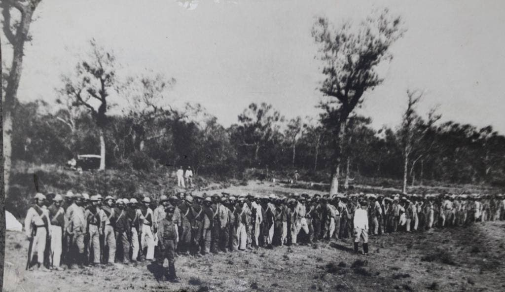

El fortín Coronel Toledo fue fundado en 21 de Enero de 1927 por el Capitán Federico Wesman Smith, el Teniente Alfredo Ramos, el Sargento Tiburcio Alderete y el Cabo Primero Alfredo Pla.
tiempos de paz el fortín era ocupado por un pelotón. Durante el principio de la guerra del Chaco el fortín Boquerón y Toledo fueron ocupados casi simultáneamente por las tropas bolivianas el 31 de Julio de 1931, para luego ser reocupado por los paraguayos el 22 de enero de 1933.
EL 14 de febrero de 1933 anunciando la futura batalla de Toledo, tropas de vanguardia paraguayas chocan en escaramuzas con patrullas de avanzada bolivianas.
El 25 de febrero una oleada de diez aviones bombardea Toledo, en el bombardeo un avión es derribado y al día siguiente 26 de febrero se inicia la batalla, terminando el 12 de Mayo de 1933, con un saldo aproximado de 1039 entre heridos y muertos en el ejército boliviano y un estimativo de 241 entre heridos y muertos en el ejército paraguayo. (Machuca 1962, Gonzales 1972).
La Batalla de Toledo, de la Guerra del Chaco, entre Bolivia y el Paraguay, se produjo desde el 25 de febrero al 11 de marzo de 1933. El ataque del ejército boliviano al estratégico fortín Toledo fue, hasta la Segunda batalla de Nanawa, en julio de 1933, el que más bajas produjo al ejército boliviano. Esta batalla finalizó el 11 de marzo de 1933 con el repliegue boliviano hasta una línea defensiva a 11-15 km del fortín Corrales y fue, hasta la Segunda batalla de Nanawa, en julio de 1933, la más importante de la guerra.
El Coronel Ayala no pudo realizar la persecución de enemigo por la escasez de camiones y porque el coronel Estigarribia decidió utilizar parte de sus fuerzas como reserva general debido a la sorpresiva aparición de la 9.ª División boliviana en la zona central y la posterior captura que realizó esa unidad del fortín Alihuatá (Zenteno) el 13 de marzo de 1933. "Un error que Kundt cometió frecuentemente durante la guerra fue la de no concentrar sus fuerzas en un solo y bien planeado ataque. En su lugar ordenaba ataques sucesivos sobre puntos separados del frente de batalla. Aparte de esta estrategia, a menudo sacaba fuerzas de otros frentes, por lo que cada ataque se realizaba sin reservas".
Como era habitual en la conducción del ejército boliviano, el general Filiberto Osorio, dirigió toda la operación desde su Puesto de Mando ubicado en Yayucubás, a casi 100 km del frente de batalla.